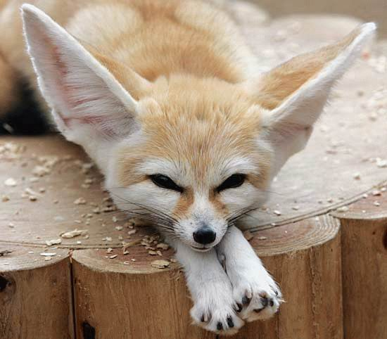
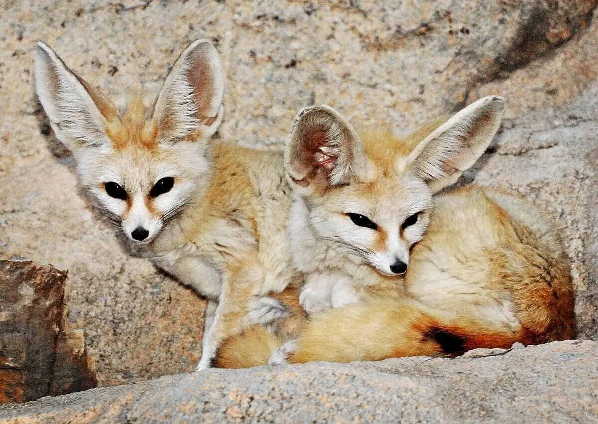

The Fennec fox lives in North Africa, including Mauritania, Morocco, and Egypt.
The Fennec fox has the most unique diet of any fox species, including crickets, grasshoppers, locusts, and even scorpions! They also eat rats, eggs, figs, berries, roots. Unlike other foxes, they can eat different foods in captivity, like: chicken, beef, lamb, apples, carrots, broccoli, and hard boiled eggs.
They have ears that are 4-6 inches long, which alows them to hear prey from through feet of sand. They also have special kidneys that allow them to go a very long time without water.


Photo by unknown from Wikimedia Commons
Photo by unknown from unknown